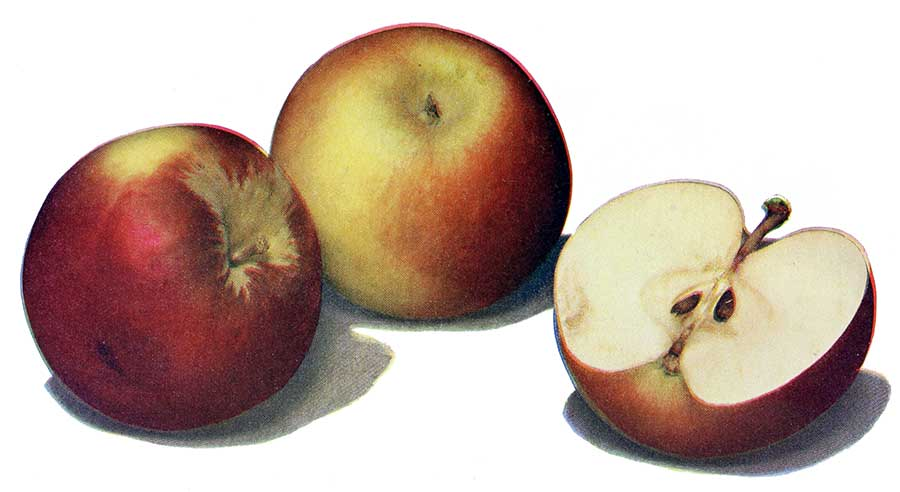

Apples
The apple tree (Malus domestica) is a deciduous tree in the rose family best known for its sweet, pomaceous fruit, the apple. It is cultivated worldwide as a fruit tree, and is the most widely grown species in the genus Malus. The tree originated in Central Asia, where its wild ancestor, Malus sieversii, is still found today. Apples have been grown for thousands of years in Asia and Europe, and were brought to North America by European colonists. Apples have religious and mythological significance in many cultures, including Norse, Greek and European Christian traditions.
Apple trees are large if grown from seed, but small if grafted onto roots (rootstock). There are more than 7,500 known cultivars of apples, resulting in a range of desired characteristics. Different cultivars are bred for various tastes and uses, including cooking, eating raw and cider production. Apples are generally propagated by grafting, although wild apples grow readily from seed. Trees and fruit are prone to a number of fungal, bacterial and pest problems, which can be controlled by a number of organic and non-organic means. In 2010, the fruit's genome was sequenced as part of research on disease control and selective breeding in apple production.
Worldwide production of apples in 2013 was 80.8 million tonnes, with China accounting for 49% of the total.
The apple is a deciduous tree, generally standing 1.8 to 4.6 m (6 to 15 ft) tall in cultivation and up to 39 ft (12 m) in the wild. When cultivated, the size, shape and branch density are determined by rootstock selection and trimming method. The leaves are alternately arranged dark green-colored simple ovals with serrated margins and slightly downy undersides.